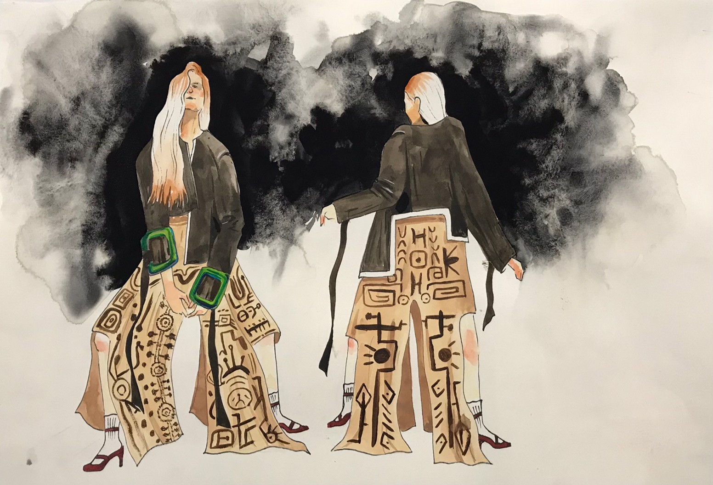
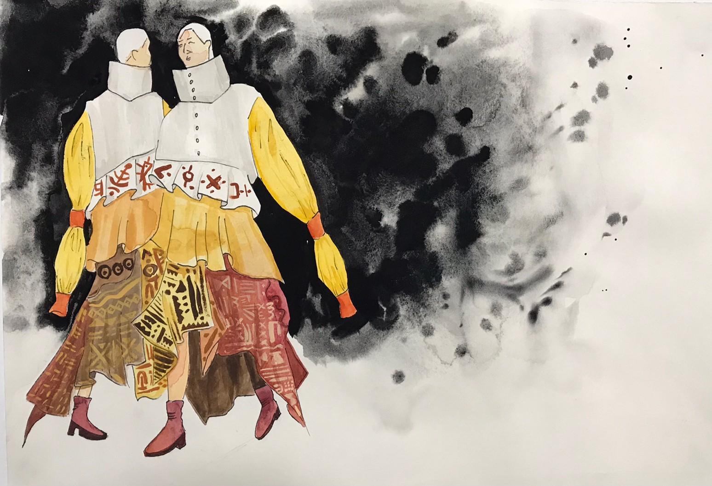

余芊慧
Chein Hui, Yu
系所
時尚設計學系 服飾創意設計組
興趣
繪畫、聽音樂、逛文創市集
專長
善於觀察、細心
求學經歷
因為熱愛韓國KPOP圈，所以接觸到許多時尚潮流的服飾風格，也讓我萌生了創作服飾的夢想。
自我介紹
嗨嗨!我是一個常常在做白日夢的女孩，擁有許多天馬行空的想法，聽起來雖然很怪，但是也創造出了許多創作靈感，我的夢想是成為服裝設計師，踏進韓國KPOP圈!
《個人作品》


不畏不懼
以牛仔勇於冒險的發想去製作一件女性上衣，布料以拼接的方式，試圖詮釋現代女性的多樣性、獨立的形象，加上波浪線條，是期許可以克服各種大風大浪，而側邊以粗麻繩連繫，像是牛仔丟套索似的去追求自己想要的事物。
縛
以大地色系的布料來呈現生活在大地的我們，利用布料綑綁而成的結，從單肩環繞至腰部，象徵我們身上都有未打開的心結，底層深綠色的網紗在肩上突出，彷彿小草般向上生長，表示我們承受著這些壓抑，但仍努力成長著。
宴
以上流社會的晚宴服裝作為主題，運用壓克力板高溫熱塑可延展的特性，做出浮誇的波浪褶皺，顯現出高雅華麗的一面，再利用光線與透明片間各種光線折射的原理、類似琉璃光澤感的特性，呈現出高端奢華的意象。
魅
每個人都會在各自的人生道路上遇到許多瓶頸，留下了許多傷疤，我利用石膏的特性來代表人類的精神層面，堅強的外表下或許有一些不為人知的傷痕，但以珠寶來作為裝飾的主角，是希望自己能保持閃耀的狀態，繼續奮鬥冒險。